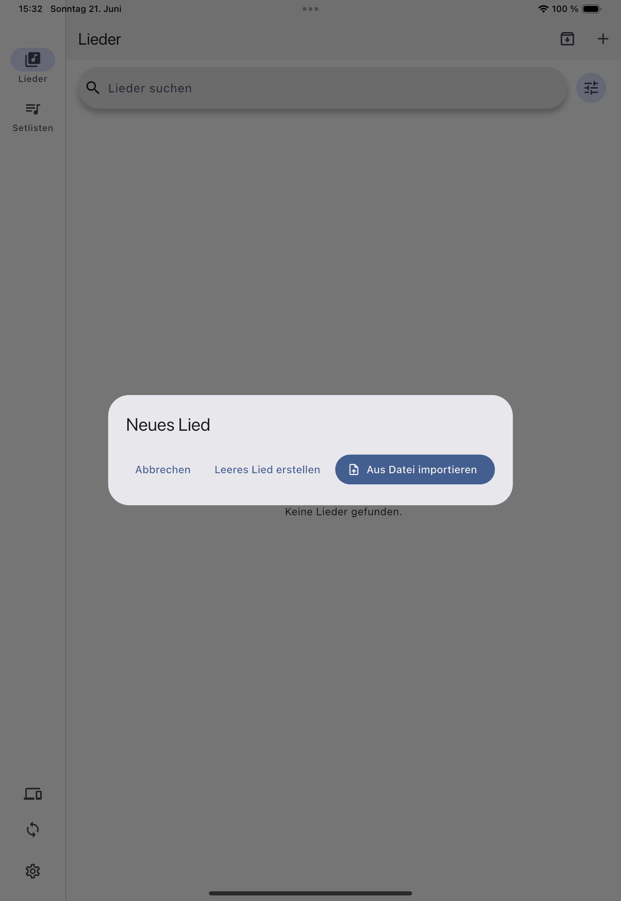
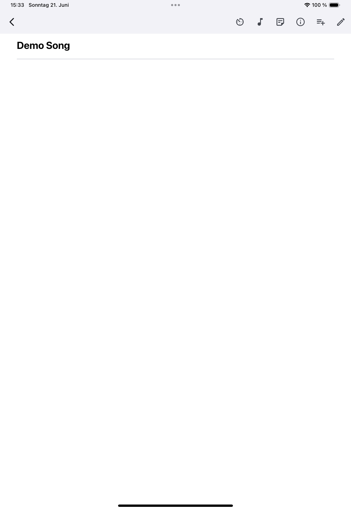

Beta-Handbuch · App-Build 0.2.0+4
ChordJungle Handbuch
Praktische Hilfe für Songs, Setlisten und den Einsatz auf der Bühne – ehrlich über den aktuellen Stand der Beta.
Schnellstart
In fünf Schritten bereit.
- Unter Songs einen kurzen Test-Song erstellen oder eine Textdatei importieren.
- Rohtext und Vorschau prüfen.
- Unter Setlisten eine kleine Probe- oder Gottesdienst-Setliste anlegen.
- Den Stage Mode mit dieser Setliste testen.
- Ein Backup erstellen und die Wiederherstellung mit unkritischen Daten ausprobieren.
Kapitel
Finde den passenden Einstieg.
Erste Schritte
Orientierung, Editor und Vorschau.
02Songs
Anlegen, bearbeiten, lesen und archivieren.
03Import
Textdateien, ChordPro und SongSelect.
04Setlisten
Reihenfolge, Wiederholungen und Hinweise.
05Stage Mode
Lesbar und fokussiert auf der Bühne.
06Metronom
Tempo, Takt und Gerätehinweise.
07Backup & Wiederherstellung
Daten sicher testen und zurückspielen.
08Synchronisation
Optionaler Nextcloud/WebDAV-Sync.
09Fehlerbehebung
Hilfe bei Import, Sync und Anzeige.
10Feedback
So wird ein Beta-Bericht wirklich hilfreich.
01 · Erste Schritte
Deine Bibliothek bleibt auf deinem Gerät.
In der Navigation findest du Songs, Setlisten, optionalen Sync und Einstellungen. Lesen, Bearbeiten und Stage Mode funktionieren grundsätzlich ohne Internet.
Im Rohtext-Editor bearbeitest du Titel, Interpret und Ausgangstext. Die Vorschau bereitet Akkorde und Strukturangaben lesbar auf, ohne den Rohtext umzuschreiben. Prüfe nach Importen zuerst den Rohtext – er bleibt die verlässlichste Grundlage für Korrekturen.

02 · Songs
Songs anlegen, lesen und aufräumen.
- Songs öffnen und auf + tippen.
- Leeren Song erstellen wählen.
- Titel, Interpret sowie bei Bedarf Tonart, Tempo oder Taktart eintragen.
- Text im Rohtext-Editor einfügen und speichern.
- Die Vorschau öffnen und Lesbarkeit prüfen.
Die Textgröße der Vorschau lässt sich mit zwei Fingern anpassen und wird für den Song gespeichert. Nicht mehr benötigte Songs können gelöscht oder – wenn sie noch in Setlisten verwendet werden – archiviert werden.


Vor dem ersten echten Einsatz
- Sind Akkorde, Zeilenumbrüche und Überschriften auf deinem Gerät lesbar?
- Bleibt die gewählte Zoomstufe nach erneutem Öffnen erhalten?
- Wechselt eine Zwei-Finger-Geste nicht versehentlich den Song?

03 · Import
Lokale Songdateien bewusst übernehmen.
- Unter Songs auf + tippen.
- Aus Datei importieren wählen.
- Datei auswählen, Titel und Rohtext prüfen.
- Erst speichern, wenn der Inhalt stimmt.
Unterstützt werden UTF-8-Textdateien mit den Endungen .txt, .onsong, .chordpro, .chopro, .cho, .crd, .pro und .chord. PDFs und Medien-Dateien sind kein Einzeldatei-Import dieser Beta.

- SongSelect im Browser öffnen.
- Falls verfügbar, eine ChordPro-Datei herunterladen.
- Die lokale Datei über Neuer Song → Aus Datei importieren in ChordJungle importieren.
ChordJungle verbindet sich nicht direkt mit SongSelect und bietet keine SongSelect-Anmeldung. Du bist selbst dafür verantwortlich, dass deine SongSelect-/CCLI-Lizenz die gewünschte Nutzung erlaubt.
04 · Setlisten & aktive Setliste
Reihenfolge für Probe und Bühne vorbereiten.
- Setlisten öffnen und eine neue Liste anlegen.
- Einen klaren Namen vergeben; ein Datum hilft bei wiederkehrenden Einsätzen.
- Songs aus der Bibliothek hinzufügen und in die gewünschte Reihenfolge bringen.
Ein Song darf mehrfach in derselben Setliste vorkommen. Jede Stelle ist ein eigener Eintrag und kann eigene Notizen, Tempo- oder Transpositionsangaben haben.
Aktive Setliste
Setlisten öffnet die Übersicht. Aktive Setliste führt zur aktuell ausgewählten, blau markierten Liste und ihrem laufenden Song-Kontext zurück. Ist die Navigation auf deinem Gerät nicht sichtbar, öffne die gewünschte Setliste zuerst in der Übersicht.


05 · Stage Mode
Fokussiert, wenn es darauf ankommt.
Öffne eine Setliste oder einen Setlisten-Eintrag und starte den Stage Mode. Er ist die aufgeräumte Vollbildansicht für die Bühne.
- Wischen oder sichtbare Steuerelemente navigieren durch die Song-Reihenfolge.
- Ein Tipp in die Mitte blendet die Bedienelemente im Vollbild ein oder aus.
- Über Zurück oder Schließen kehrst du zum aktuellen Song-Kontext zurück.
- Tablet und Querformat können einen geteilten Kontext für Setliste und Song zeigen.

06 · Metronom
Tempo sichtbar und optional hörbar halten.
ChordJungle bietet ein visuelles Metronom und optional einen akustischen Tick. Der erste Schlag eines Taktes wird sichtbar und hörbar unterschieden.
- Tempo (BPM) und bei Bedarf Taktart für Song oder Setlisten-Eintrag hinterlegen.
- Im Song- oder Stage-Kontext das Metronom-Symbol antippen.
- Über dieselbe Aktion starten oder stoppen.
- Ton, Lautstärke, visuelle Stärke und Vibration in den Einstellungen anpassen.
Der Tick folgt der Medienlautstärke. Prüfe Lautlosmodus, Systemlautstärke und Bluetooth-Ausgabe. Bluetooth-Verzögerungen sind geräteabhängig und kein verlässlicher Taktgeber für eine Band.

07 · Backup & Wiederherstellung
Backup ist nicht Sync.
Ein Backup ist eine vollständige Momentaufnahme deiner lokalen Songbibliothek und Setlisten. Erstelle es vor größeren Änderungen, Importen und Beta-Tests.
- Einstellungen → Backup & Wiederherstellung öffnen.
- Backup erstellen und die Datei an einem wiederfindbaren Ort speichern.
- Kontrollieren, ob die Datei außerhalb der App sichtbar ist.
Beim Wiederherstellen wird die lokale Bibliothek ersetzt. Erstelle vorher möglichst ein neues Backup, wähle die Datei bewusst und prüfe danach Songs, Setlisten und Reihenfolge. Eine Wiederherstellung startet niemals automatisch einen Sync.

08 · Lokale Übertragung
Direkt im vertrauenswürdigen Netzwerk.
Die lokale Übertragung sendet ausgewählte Songs oder Setlisten zwischen Geräten im selben WLAN oder LAN – ohne ChordJungle-Konto und ohne Cloud. Beide Geräte verbinden, ChordJungle auf dem Empfänger öffnen, auf dem Sender die Übertragung starten und den Empfang auf dem Zielgerät ausdrücklich bestätigen. Bei Doppelungen die vorgeschlagene Behandlung sorgfältig prüfen.
Wenn kein Gerät gefunden wird, können Gast-WLAN, Hotspot, Firewall oder WLAN-Client-Isolation die Suche blockieren. Aktualisiere die Suche, prüfe das Netzwerk und nutze bei Bedarf manuelle IP-Adresse oder QR-Code. Auf iPhone und iPad muss die lokale Netzwerkberechtigung erlaubt sein.
09 · Nextcloud/WebDAV-Sync
Optionaler Sync für deine eigenen Geräte.
Der optionale Nextcloud/WebDAV-Sync ist eine Beta-Funktion für eine Person mit mehreren eigenen Geräten – keine Team-Bibliothek und keine Echtzeit-Zusammenarbeit. ChordJungle bleibt ohne Sync nutzbar.
- Einstellungen → Nextcloud Sync öffnen.
- WebDAV-/Nextcloud-Adresse, Benutzername und ein geeignetes Passwort oder App-Passwort eintragen.
- Sync- und bei Bedarf Backup-Ordner prüfen.
- Den ersten Sync bewusst manuell starten.
Falls ein Beispiel benötigt wird, verwende nur Platzhalter wie https://deine-cloud.example.com/remote.php/dav/files/.... Teile weder Passwort noch WebDAV-Adresse in öffentlichen Fehlerberichten. Erstelle vor erstem Sync und großen Importen ein Backup und teste zunächst mit Testdaten.
10 · Einstellungen
Darstellung, Daten und Diagnose.
Die Einstellungen gruppieren Themen wie Sprache und Darstellung, Stage Mode, Töne und Metronom, Backup & Wiederherstellung, Nextcloud Sync, lokale Übertragung sowie Diagnose & Info. Nicht jede Option ist auf jedem Gerät gleich relevant.
11 · Fehlerbehebung
Die häufigsten Stolpersteine.
Import sieht falsch aus
Im Rohtext-Editor prüfen: Die Datei sollte UTF-8-Text mit unterstützter Endung sein. Nicht unterstützte ChordPro- oder OnSong-Angaben können in der Vorschau ausgeblendet werden; der Rohtext bleibt erhalten.
Kein Gerät für die Übertragung gefunden
Beide Geräte müssen im selben vertrauenswürdigen Netzwerk sein und ChordJungle muss auf dem Empfänger geöffnet sein. Prüfe Gast-WLAN, Hotspot, Firewall, WLAN-Isolation und auf iOS die lokale Netzwerkberechtigung.
Sync unvollständig oder fehlerhaft
Adresse, Benutzername, Passwort/App-Passwort und Ordnerpfad kontrollieren. Sync manuell starten, vorher ein Backup erstellen und niemals Zugangsdaten im Feedback teilen.
Backup lässt sich nicht wiederherstellen
Eine vollständige ChordJungle-Backup-Datei verwenden. Bei einer Fehlermeldung eine andere bekannte Sicherung testen und die App-Version zum Bericht hinzufügen.
Metronom ist nicht hörbar
Akustischen Tick, Medienlautstärke, Lautlosmodus und Bluetooth-Ausgabe prüfen. Das visuelle Metronom kann dennoch funktionieren.
12 · Beta-Feedback
Ein guter Bericht spart allen Zeit.
Teste besonders Song-Erstellung, Text-/ChordPro-Import, Setlisten, aktive Setliste, Stage Mode, Backup & Wiederherstellung, lokale Übertragung, optionalen Sync sowie Metronom und Layout auf deinem Gerät. Feedback kannst du über Einstellungen → Diagnose & Info → Feedback senden senden.
Gerät: Betriebssystem: ChordJungle-Version: Was wollte ich tun? Was ist passiert? Was hätte ich erwartet? Kann ich es reproduzieren? Screenshot/Video vorhanden? Betrifft es Import, Sync, Backup, Stage Mode oder Transfer?